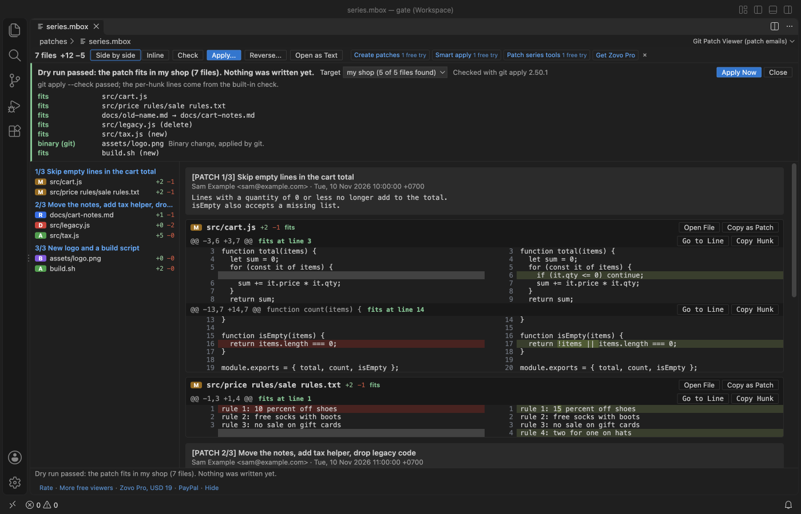

Git Patch Viewer & Apply Diff
Git Patch Viewer & Apply Diff, a VS Code extension by Zovo
Read a git patch file by file in a VS Code tab, then apply it to your workspace after a dry run shows which hunks fit. Works offline. Made by Zovo.
Free, MIT license. Needs VS Code 1.75.0 or newer. Extension ID zovo.zovo-git-patch, version 0.1.0.

Free, with no account and no network calls:
- Opens
.patchand.difffiles,git format-patchoutput, a whole series in one.mbox, and patch emails (.eml, also quoted-printable and attachments). - Side by side or inline, one section per file, with a file list and the added and removed line counts. The changed part of each line is marked.
- Renames, copies, new and deleted files, mode changes and binary files are named as such. A binary change without data says so instead of failing later.
- Apply and Reverse always run a dry run first. It lists every file and every hunk: fits, fits at another line, already applied, or does not fit and why. Nothing is written until the dry run passes and you click Apply Now.
- Uses
git apply --checkwhen git is installed, and its own applier when it is not (or in a remote or untrusted folder). - Paths with spaces, quoted and non-ASCII paths, CRLF files, multi-root workspaces (it picks the folder that holds the files, and you can change it), and patches from the clipboard.
- Go to Line opens the target file where a hunk belongs. Copy as Patch copies one file or one hunk as its own patch.
- An empty patch, or text with no diff in it, opens with a plain message.
Zovo Pro: USD 19 once, for the Pro tools in every Zovo extension. Each Pro tool has 1 free try on your computer first:
- Create patches: from staged changes, unstaged changes, all uncommitted work, selected files, or a commit range as a
format-patchseries with a cover letter. Binary files and paths with spaces are included, and an empty patch is never written. - Smart apply: a hunk-by-hunk plan with whitespace-insensitive and fuzzy matching, conflict markers where the file has changed, and a check box per hunk before anything is written.
- Patch series tools: split a series into numbered files or a patch into one patch per file, merge patch files into one mbox, and reorder and renumber
[PATCH n/m].
Questions people ask
Is Git Patch Viewer & Apply Diff free?
Yes. Git Patch Viewer & Apply Diff is free and MIT licensed.
How do I install Git Patch Viewer & Apply Diff?
Click "Install in VS Code" above, or search for zovo.zovo-git-patch in the Extensions view.
How to use it
- Click a
.patchor.difffile. For.mboxand.emlfiles, right-click and choose Open in Git Patch Viewer (another viewer may own those types). - Apply... and Reverse... are in the viewer toolbar and in the Explorer right-click menu (Apply Patch to Workspace...). Check runs the dry run alone.
- With a patch on the clipboard, run Git Patch: Apply Patch from Clipboard... from the Command Palette. Git Patch: View Active Editor as Patch shows a diff you pasted into an editor.
- Keys in the viewer:
Sside by side,Iinline,NandPnext and previous file. - To try it, run Git Patch: Open the Sample Patch Series.
- The Pro tools are in the Command Palette (Git Patch: ... (Pro)), in the Explorer right-click menu, and in the small row at the end of the viewer toolbar. The row closes with its x for the rest of the session, and the setting
gitPatch.showProToolshides it for good.
Applying safely
- The dry run reads the files and changes nothing. Apply Now runs the same check again right before writing, so a file that changed in between stops the apply.
- With git, the patch goes to
git applyon standard input inside the target folder. Above that folder git does not look for a repository, so a patch for a subfolder does not land somewhere else. - Paths that point outside the target folder (
.., absolute paths,.git) are refused. - In an untrusted workspace git is never run; the built-in applier does the work.
Settings
| Setting | Default | What it does |
|---|---|---|
gitPatch.defaultView | split | Side by side or inline the first time; the viewer then remembers your choice. |
gitPatch.applyWith | auto | auto uses git when it is installed, builtin always uses the built-in applier. |
gitPatch.gitPath | empty | The git program, when it is not on the PATH. |
gitPatch.outputFolder | patches | Where Create patches (Pro) writes, inside the repository. |
gitPatch.maxFileSizeMB | 50 | Larger patch files open with a message. |
gitPatch.showProTools | true | Shows the Pro tools in menus, the palette and the toolbar row. |
gitPatch.showSupportLinks | true | Shows the Rate, More free tools and Zovo Pro links. |
gitPatch.askForRating | true | Asks once for a rating after two good uses at least 30 minutes apart. |
Privacy
The extension reads the patch you open and the files it applies to, and nothing else. It makes no network calls, and nothing is uploaded or measured. It runs your local git only for the dry run, the apply and the Pro patch maker. The links at the bottom of the viewer (Rate, More free tools, Zovo Pro) open a page only when you click them, and the setting gitPatch.showSupportLinks hides them.
Zovo Pro
One payment of USD 19 unlocks the Pro tools in every Zovo extension on your computers; a team of 5 is USD 59. The key works offline. Run Zovo Pro: Get Zovo Pro from the Command Palette, or click Get Zovo Pro in the toolbar row. The Zovo Pro tab lists this extension's Pro tools and the free try left for each before any payment page opens.
License
MIT, by Zovo. No third-party code is included; see THIRD-PARTY-NOTICES.md.
Install Git Patch Viewer & Apply Diff
Click the button to open VS Code and install it, or press Ctrl+P (Cmd+P on macOS) in VS Code and run ext install zovo.zovo-git-patch.
Free, MIT license. Needs VS Code 1.75.0 or newer. Extension ID zovo.zovo-git-patch, version 0.1.0.
Source code and issues are on GitHub.
Zovo Pro and support
Zovo Pro: USD 19 once, every Zovo viewer. It turns on the Pro tools in this extension and in the other Zovo extensions you use. The free features stay free.
After a card payment your license key shows on the next page. Paste it with the command "Zovo Pro: Enter a key".
You can also support the work with no Pro:
Need your format supported?
Open a format request with a sample file, and I reply there whether it can be done. For USD 299 once, through this GitHub Sponsors tier, I add your file format or a missing feature to this extension, with tests, within 7 days.